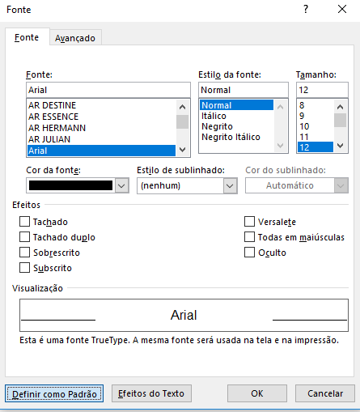

Tutorial: Word com a formatação padrão ABNT
- By Matheus O. Santos
- dom 15 outubro 2017
Isso parece sempre uma daquelas tarefas impossíveis de que quando o professor passa você fica bravo e tudo mais, mas é tudo uma questão de prática. As normas ABNT, não são tão ruins assim depois que você conhece ela. Mas admito que é horrível ficar formatando sempre. Se atente a esse tutorial e você não terá mais problemas com isso
Primeiro de tudo abra obviamente o Word.Para esse primeiro passo, vamos precisar apenas desse elementos.

Clique naquela seta pequena no canto.

Abrirá essa janela aqui. Altere a fonte para "Arial". O estilo da fonte para "normal".O tamanho para "12" e clique em "Definir como padrão".

Ao clicar aparecerá a mensagem abaixo. Ao aparecer, selecione a segunda opção e aperte "Ok"

Você voltará para a tela inicial do documento, agora é hora de selecionar a mesma setinha na parte de "Páragrafo"

Irá aparecer uma janela parecida a da anterior. Deixe o alinhamento como "justificado" o nível do tópico como "corpo de texto"(a não ser que isso seja para titulo se você estiver fazendo a formatação para um título deixe como título 1. Apenas os textos tem que ficar como "corpo de Texto"). Deixe especial como "primeira linha Por 2 CM". E o espaçamento entre linhas como "1,5". Deixe os valores que sobraram como 0. Ao terminar, clique em "Definir como padrão" e depois selecione a segunda opção que é "Todos os modelos baseados no modelo normal .dotm?"

Feito isso vá na guia "Layout" e na aba de "Configurar Página". Clique na mesma setinha.

Abrirá uma janela igual a das outras. Nela deixe "Superior" e "Esquerda" com "3 CM" e "Inferior" e "Direita" como
"2 CM".

E depois aperte "Definir como Padrão". Aparecerá uma mensagem aperte "Sim" nela

Após ter feito tudo isso, as configurações de texto, e margem, irão ficar salvas como padrão e todos os documentos ficarão desse jeito.
{kind=link}